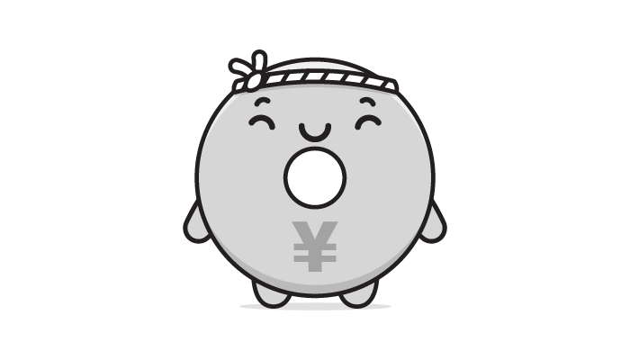
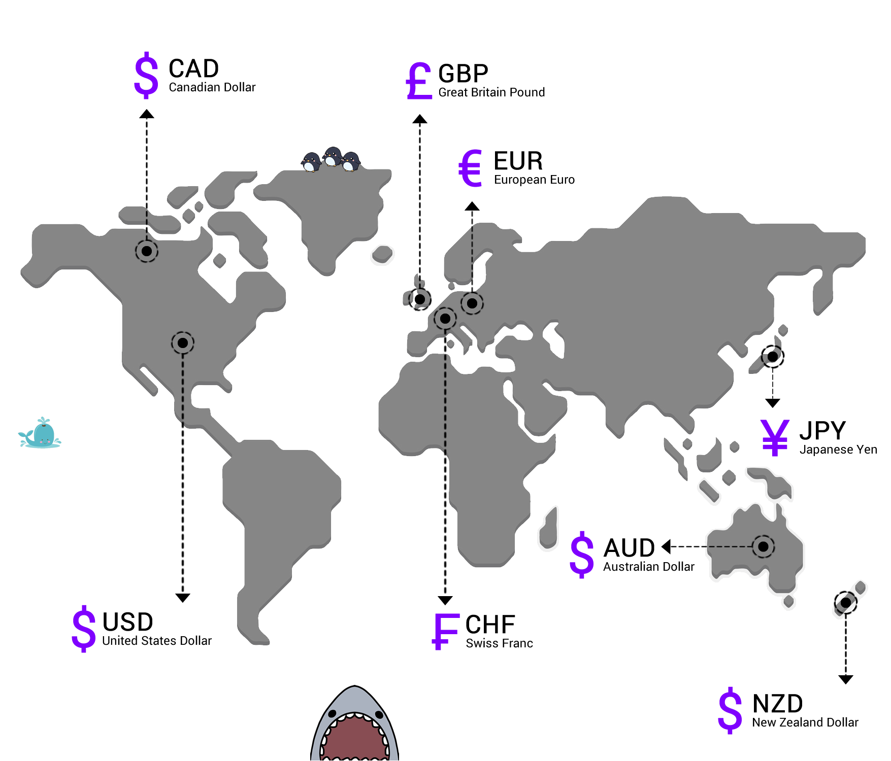
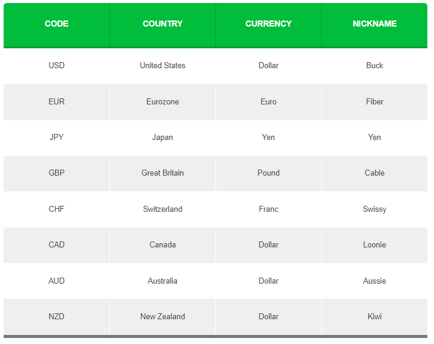
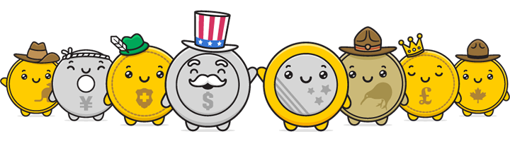
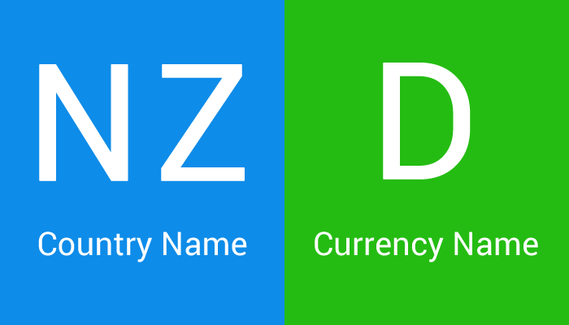
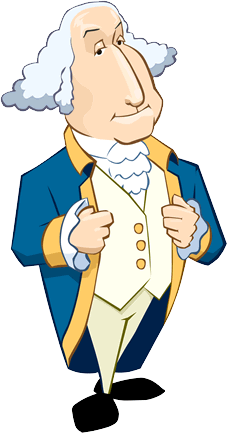

What is traded in forex?
The simple answer is MONEY. Specifically, currencies.
Because you’re not buying anything physical, forex trading can be confusing so we’ll use a simple (but imperfect) analogy to help explain.
Think of buying a currency as buying a share in a particular country, kinda like buying shares in a company.
The price of the currency is usually a direct reflection of the market’s opinion on the current and future health of its respective economy.
In forex trading, when you buy, say, the Japanese yen, you are basically buying a “share” in the Japanese economy.

You are betting that the Japanese economy is doing well, and will even get better as time goes.
Once you sell those “shares” back to the market, hopefully, you will end up with a profit.
In general, the exchange rate of a currency versus other currencies is a reflection of the condition of that country’s economy, compared to other economies.
By the time you graduate from this School of Pipsology, you’ll be eager to start working with currencies.
While there are potentially lots of currencies you can trade, as a new forex trader, you will probably start trading with the “major currencies“.

They’re called “major currencies” because they’re the most heavily traded currencies and represent some of the world’s largest economies.
Forex traders differ on what they consider as “major currencies”.
The uptight ones who probably got straight A’s and followed all the rules as children only consider USD, EUR, JPY, GBP, and CHF as major currencies.
Then they label AUD, NZD, and CAD as “commodity currencies“.
For us rebels, and to keep things simple, we just consider all eight currencies as the “majors”.
Below, we list them by their symbol, country where they’re used, currency name, and cool nicknames.


Currency symbols always have three letters, where the first two letters identify the name of the country and the third letter identifies the name of that country’s currency, usually the first letter of the currency’s name.
These three letters are known as ISO 4217 Currency Codes.
By 1973, the International Organization for Standardization (ISO) established the three-letter codes for currencies that we use today.

Take NZD for instance…
NZ stands for New Zealand, while D stands for dollar.
Easy enough, right?
The currencies included in the chart above are called the “majors” because they are the most widely traded ones.
DID YOU KNOW? The British pound is the world’s oldest currency that’s still in use, dating back to the 8th century. The newest currency in the world is the South Sudanese pound, made official on July 18, 2011.
We’d also like to let you know that “buck” isn’t the only nickname for USD.
There’s also: greenbacks, bones, benjis, benjamins, cheddar, paper, loot, scrilla, cheese, bread, moolah, dead presidents, and cash money.
So, if you wanted to say, “I have to go to work now.”
Instead, you could say, “Yo, I gotta bounce! Gotta make them benjis son!”
FUN FACT: In Peru, a nickname for the U.S. dollar is Coco, which is a pet name for Jorge (George in Spanish), a reference to the portrait of George Washington on the $1 note?

They call me Coco yo!